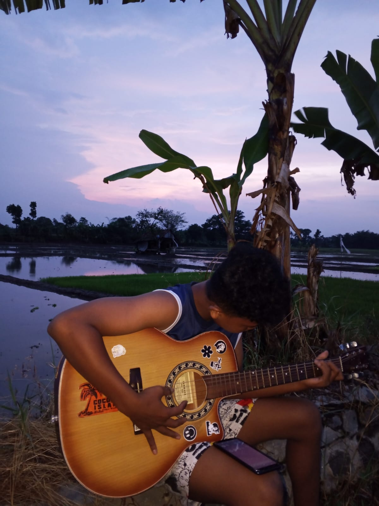

Welcome to my website
klik disini
Halo! Saya senang belajar hal baru, bekerja bersama orang lain, dan mengubah ide menjadi sesuatu yang bermanfaat.
JELAJAHI PROFIL ↓Saya pribadi yang antusias, bertanggung jawab, dan terbuka terhadap pengalaman baru. Saya percaya proses belajar dan kolaborasi adalah bagian penting untuk berkembang.
Berpartisipasi dalam kegiatan dan program kerja, serta berkolaborasi dengan anggota tim untuk mencapai tujuan bersama.
Beberapa kemampuan yang terus saya asah melalui pengalaman dan pembelajaran.
Kegiatan yang membantu saya tetap terinspirasi dan menjaga keseimbangan.